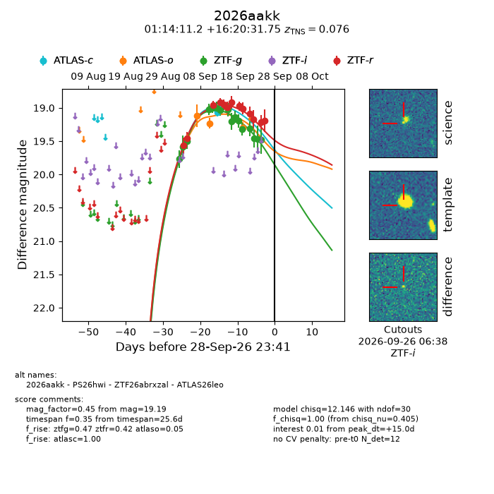
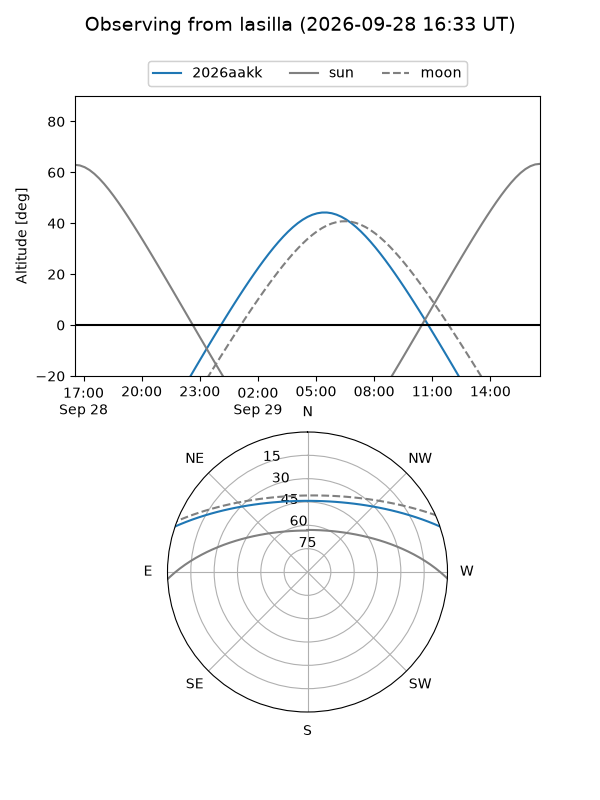
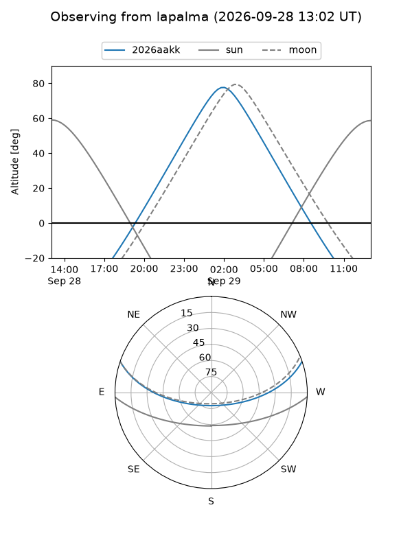
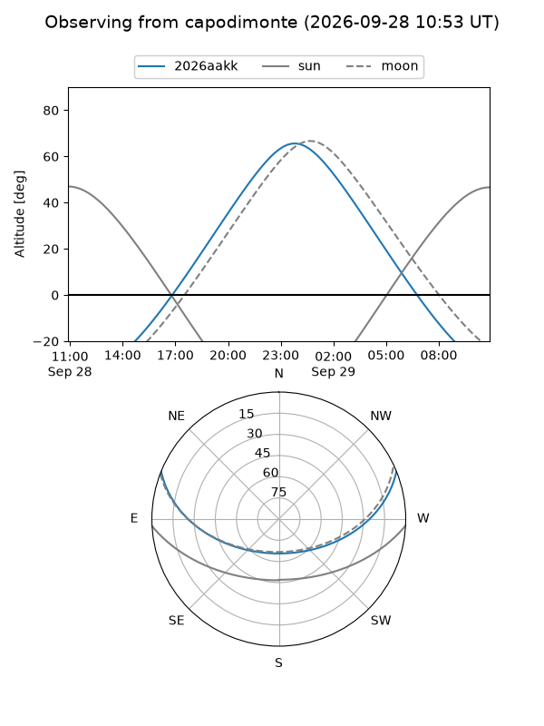
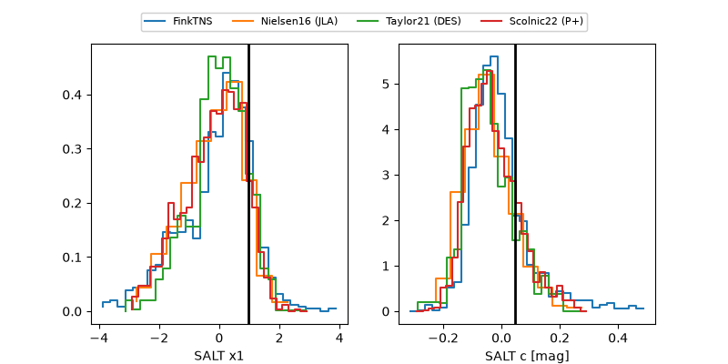

2026aakk
Target 2026aakk at 2026-09-28 23:43
Aliases and brokers:
FINK-ZTF: ztf.fink-portal.org/ZTF26abrxzal
Lasair-ZTF: lasair-ztf.lsst.ac.uk/objects/ZTF26abrxzal
ALeRCE-ZTF: alerce.online/object/ZTF26abrxzal
YSE-PZ: ziggy.ucolick.org/yse/transient_detail/2026aakk
TNS name: wis-tns.org/object/2026aakk
Direct TNS query: direct search
alt names
ZTF26abrxzal (ztf,fink_ztf)
2026aakk (tns,yse)
ATLAS26leo (atlas)
PS26hwi (panstarrs)
Coordinates:
equatorial (ra, dec) = 18.5465,+16.34215
equatorial (HMS+DMS) = 01:14:11.16,+16:20:31.75
galactic (l, b) = (130.8258,-46.18064)
Flags:
TNS type: SN Ia
TNS redshift: 0.0760
peak dt: +15.0
Photometry:
last atlasc=18.94, atlaso=19.29, ztfg=19.48, ztfr=19.19
2 atlasc, 3 atlaso, 16 ztfg, 13 ztfr detections
Lightcurve

Visibility



Additional plots
